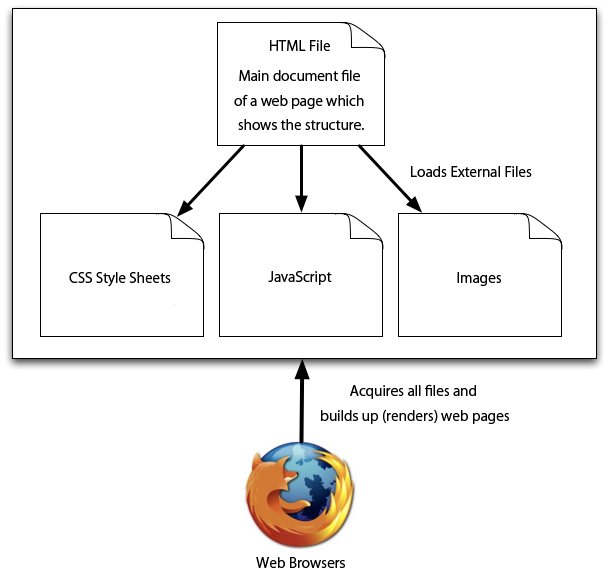
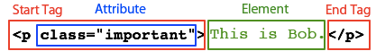
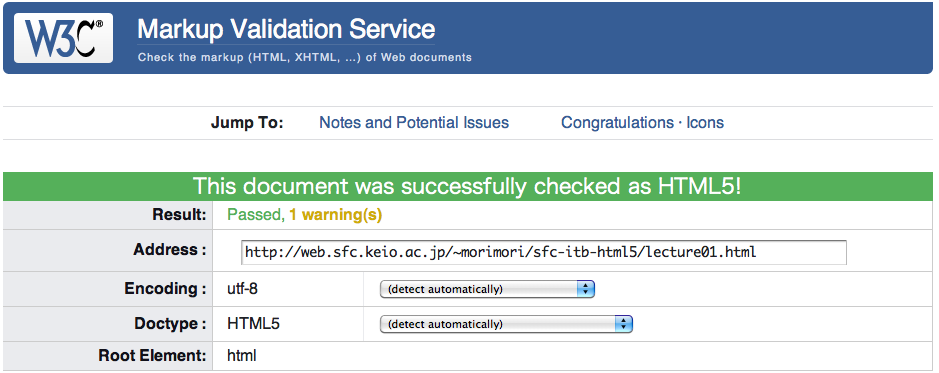
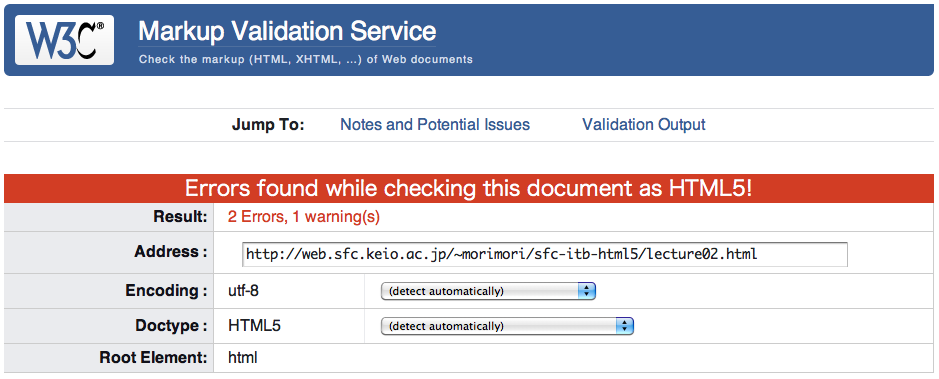
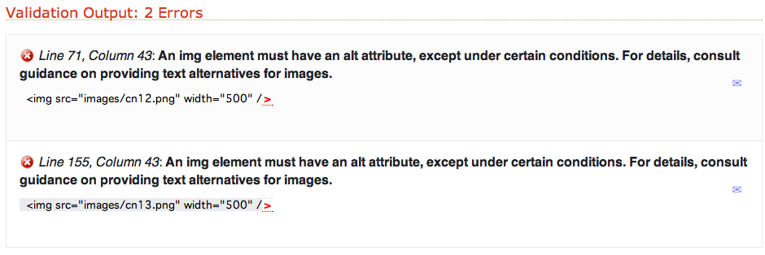

Lecture #7 : Understand the Internal Structure of HTML and CSS
In the previous lecture, we have viewed the source code of a web page, and played around with the values. In this lecture, we would discuss how web pages are made.
The Roles of HTML and CSS
When we read from an article from the newspaper, we can tell the difference between the caption and the body by the size, color, and layout of the characters. However, it is very difficult for computers to interpret such obscure definitions.In order to explicitly-define the structure of a document for computers to interpret, HTML (Hyper Text Markup Language) was introduced. CSS (Cascade Style Sheets), on the other hand, is used for specifying the font size, color, and layout.
A web page written with HTML is first analyzed by the web broser (e.g. Firefox and Safari). Browsers then render the page, and presents a view in a form which humans may understand. If additional files such as images and video clips were to be required upon rendering, browsers would download them.
HTML Tags
In HTML, the structure of a page is expressed using tags. This section will explain the details of HTML tags.
Tags
HTML tags are symbols that indicate the structure of the page. Each tag begins with a "<" symbol, and ends with a ">" symbol.
<html>
Among the tags, there are "start tags" and "end tags". As indicated below, the end tags have a slash at the beginning. Any text framed by "<!--" and "-->" are called "comments". They would be ingnored by the browser upon rendering. Comments are used for leaving a memo within the code.
<html> </html>
Start tags and end tags are mostly used in pairs, but there are some tags which may be shortened into one tag. (e.g. "br" for line feeds and "img" for images)
<br />
Elements
A group of text or tags between a specific start tag and end tag are called "elements". A single element may have different tags within itself. This type of hierarchical framework is called the "nested structure". It depends on the browser how each element is processed.
For example, by using the "p (paragraph)" tag, you can define the text within the element as a paragraph.
<!DOCTYPE html>
<html>
<head>
<title>02-01</title>
</head>
<body>
<p>
Paragraph 1 - This is the first paragraph. When the "p" tag is
used, line feeds would automatically be inserted before and
after each paragraph. Long sentences would also be returned.
</p>
<p>
Paragraph 2 - If you want to force a line feed, you can use
the "br" tag. A forced life feed would look like this. <br />
</p>
<p>
Paragraph 3 - Watch where you place the "br" tag, as line feeds
are not permitted within the "html" element.
</p>
</body>
</html>
Open the sample code with a bowser
Attributes
In the start tags, you are able to add "attributes". The types of attributes you are able to define, depends on what tag you use. For example, you may define a CSS class for each tag in order to change the way it appears, or you may define the destination URL for a hyperlink.
Attributes are defined after a space following the name of the tag:
<[Tag Name] [Attribute Name]="value">
For example, if you were to define a CSS class called "important" to the "p" tag, it should look like the following sample code.
<!DOCTYPE html>
<html>
<head>
<title>02-02</title>
<link type="text/css" href="lecture02-02.css" rel="stylesheet">
</head>
<body>
<p class="important">
The "important" class is applied to this element.
</p>
<p>
Nothing is applied to this element
</p>
</body>
</html>
Open the sample code with a bowser
The following diagram wraps up what we have discussed so far.
So far, we have discussed only about "p" tags and "br" tags, but there are dozens more that are defined as HTML tags. In order to view the references of HTML tags, visit the HTML5 Tag Reference web site. It is also good to go over the source codes of existing web pages.
- Tags which are to be written within the "head" element:
- "title" tag: Title of the page. (To be shown on the title bar of the browser)
- "meta" tag: Used for defining the fundamental information of a web page. (Commonly used for defining the character encoding method)
- "link" tag: Defines external files relavant to the page. (Commonly used for defining CSS and RSS files. The "rel" attribute indicates the file type, and the "href" attribute indicates the URL of the file.
- Tags which may be used within the "body" tag:
- "article" tag: The main body of an article.
- "aside" tag: Used for defining supplimentary information of a page. Suitable for side bars.
- "nav" tag: Used for defining navigation links (bars).
- "section" tag: Used for bundling a set of contents.
- "h1", "h2", "h3", "h4", "h5", and "h6" tags: Used for defining captions. Larger the number, smaller the font.
- "p" tag: Used for defining paragraphs.
- "br" tag: Forces line feeds. This tag does not require any elements.
- "a" tag: Used for defining hyperlinks. The "href" attribute indicates the link destination, and the elements would appear as the actual hyperlink text.
- "img" tag: Used for placing images. The "src" attribute indicates the URL to the actual image material. This tag does not require any elements.
- "ul", "ol", and "li" tags: Used for listing items as enumerations. This list, in particular, uses "ui" and "li" tags.
- "table", "tr", and "td" tags: Used for defining tables.
- "span" tag: An in-line attribute used for general purposes. In most cases, it is used in combination with CSS, in order to change the font in some portions of the document.
- "div" tag: Used for defining element blocks. In most cases, it is used in combination with CSS, to change the design of a certain area (block) in the document.
Prerequisite Elements in HTML
A HTML document must fulfill the following structure.
<!DOCTYPE html>
<html>
<head>
<title></title>
</head>
<body></body>
</html>
- <!DOCTYPE html> --- Indicates the file is written in HTML5. Must be written in the first line of the file.
- <html></html> --- The elements within these tags would be recognized as the contents of the HTML document.
- <head></head> --- Indicates the preliminary information for a HTML file. Mainly used for defining external CSS and JavaScript files. It is also used for indicating the title of a page, which would appear on the browser window.
- <title></title> --- The elements within these tags Indicate the title of a page.
- <body></body> --- The elemetns within these tags Indicate the main body of a page.
As an important fact, "html", "head", and "body" tags shall only apprear once in a single HTML document. If these tags were to appear more than once, it may lead to various errors.
When creating a new HTML file, it is recommended that you use the following template to start off with. Refer to the Cross-browser Coding section for the details of "html5.js".
<!DOCTYPE html>
<html>
<head>
<meta charset="UTF-8" /><!-- Indicate the character encoding here -->
<title>The Title Goes Here</title>
<!--[if lt IE 9]>
<script src="http://html5shim.googlecode.com/svn/trunk/html5.js"></script>
<! endif=""></!>
</head>
<body>
Main body
</body>
</html>
Validate Your HTML File
In order to check and validate if the structure of your HTML file is correct, it is recommended you use the Markup Validation Service, provided by W3C.

In the W3C Markup Validation Service, you can check your HTML coding either by submitting the URL, uploading the actual file, or pasting the code to the text box. If the document was correctly coded with no errors, the validation result would return a "check passed" message. If not, it would show the number of errors along with help messages for fixing them.
--- Passed Validation Checks ---
--- Failed Validation Checks ---
In this particular situation, the errors are dues to the missing "alt" attribute, which must be included within the "img" tag.
Excersice
- Create a new HTML file "lecture02.html", and write an article document with at least one "h1" caption tag, and multiple "p" paragraph tags.
- Box off the article with an "article" tag.
- Validate your HTML file with the W3C Markup Validation Service. If there are any errors, fix them until your HTML file passes the validation.
The Basics of CSS
CSS (Cascading Style Sheets) is used for defining the font, size, layout, and colors of a HTML document. In order for HTML files to load external CSS files, the URL to the actual CSS file must be indicated with a "link" tag within the "head" tag.
Format
In CSS, the format of each style definitions are as follows:
Selector { Property: value; } /* Comments */
- Selector: Indicates where the style shall be applied within the document. Selectors may be defined by with HTML elements, such as tags, classes, and IDs. (e.g. "article", "p", ".bold", "#image001", and many more...)
- Property: Indicates the type of style. (e.g. color, width, height, ...)
- Value: Indicates the parameters for each property. (e.r. red, 300px, ...)
- Comments: May be used for commenting the code. The comments in CSS files begins with "/*" and ends with "*/".
Selectors
For the selector, either the class, the id, or the names of specific tags may be defined.
- Specific Tag Names: When specific tag names are defined, the style would be applied to all the tags with the specified name in the HTML document.
- Classes: In HTML, all tags may contain a "class" attribute. When the selector is defined with a class name along with a period at the beginning (".[class name]"), the style would be applied to all the tags with the specified class name within the HTML document. In the HTML file, the same class name may be used more than once.
- IDs: In HTML, all tags may contain an "id" attribute with an unique id name. When the selector is defined with a id name, along with a sharp-symbol at the beginning ("#[id name]"), the style would be applied to the tag with the specified id name. Unlike "class" attributes, the name of "id" attributes must be unique within a single HTML document, and the same ID must not be used more than once.
Properties and Values
The CSS Properties Index contains a complete list of properties which may be used for defining styles. There are also information for properties exclusive for CSS3. CSS3 is a new and advanced standard for defining styles, and requires a compatible browser.
The format of values depent on the property. For example, the size of the text must be defined by pixel (px) or percentage (%). On the other hand, colors must be defined by RGB codes (#000000) or color names (red, blue, and many more...). For some properties such as "margin" and "padding", the number of required values may be a vary, depending on the situation. When using such properties, be sure to go over the references.
The sample below indicates a HTML file and a CSS file with "specific tag names" and "classes".
lecture02-03.html
<!DOCTYPE html>
<html>
<head>
<title>02-03</title>
<link type="text/css" href="lecture02-03.css" rel="stylesheet" />
</head>
<body>
<article>
<h1>Caption 1</h1>
<p>
Keio University. Shonan Fujisawa Campus.<br />
<span class="important">The style definition for the "important" class is applied here.</span>
This is SFC.
</p>
<p>
Let's make nice web pages!!
</p>
</article>
</body>
</html>
In this HTML file, the CSS file (lecture02-03.css) is indicated with a "link" tag on the 5th line. Since the path to the CSS file is relative, lecture02-03.css must be in the same directory as lecture02-03.html.
lecture02-03.css
article {
border: 1px solid black; /* box the entire article with a black line */
width: 800px; /* width of article is 800 px */
/*
The following 3 lines defines the shadows
http://www.w3.org/TR/css3-background/#the-box-shadow
*/
-webkit-box-shadow: 10px 10px 25px gray;
-moz-box-shadow: 10px 10px 25px gray;
box-shadow: 10px 10px 25px gray;
}
/* Caption */
h1 {
font-size: 24px;
}
/* Make the "important" senction bold */
.important {
font-weight: bold;
color: red;
}
Open the sample code with a browser
Advanced Selectors
By using mulitple combination of the tag, class, and id, selectors can define precise styles. The precise description of selectors can lead to descrease the verbose style description, or to prevent the side effect when you modify the CSS written by other developers.Specifying class and tag at the same position(AND)
When you want to switch one class definition for different tags, you should specify tag and class name at the same position. The description format is tag.class.
/* important class is for red font color. */
.important {
color: red;
}
/* important for the a tag is for red font color and bold style. */
a.important {
font-weight: bold;
}
Here is red color.
Here is red and bold font.
Definition of parent-child relationship
This is used to define direct children of other elements. For example, you can apply different styles for header and footer tag even when you are using the same class name. The format is selector 1 [white space] selector 2. It means the selector 2 is a child of selector 1. When the delimiter is white space, selector 1 affects to its children and grand children. If you want to limit the effect only for its children, you can use greater than delimiter, like selector 1 > selector 2.
Pseudo-classes, and pseudo-elements
Peudo classes can be used as selectors even though they are not described in HTML tags. An examples is :visited. You can specify the color of visited or unvisited links by using this pseudo-class. The format is :pseudo-class name. Although pseudo-classe look a little bit confusing, these descriptions enble you enrich your web expression.
- :link -> unvisited links
- :visited -> visited links
- :hover -> applied when the mouse pointer is positioned over the element
- :first-child -> identifies a first child element in its parent element
- :nth-of-type(n) -> nth element (only CSS3. Old browsers does not support.)
Refer to CSS2 Selectors，and CSS3 Selectors for the complete list of pseudo-classes.
Other Selectors
There are more and more selector usage, eg.) narrowing down specific attributes, specifying an element in specific elements, and so on. Though it is difficult to use all selector functionality at the beginning, please learn lots of them gradually and you can create web pages you want.
Exercise
- Make a CSS file (lecture02.css) for the "lecture02.html" page you have created in the previous exercise. Load the CSS using a "link" tag.
- In lecture02.html, prepare three sentences maked up with p tag. Add class name for these tags as first, second, and third respectively.
- Set font size (font-size) of all "p" elements as 20px.
- Set font color (color) of "first class" as blue.
- Set font size (font-size) of "second class" as 24px.
- Set font style (font-style) of "third class" as italic.
- Add a new p element with some sentences which is applied first, second, and third class. Do not modify CSS file.
- Adjust the style and design using "specific tag names" and "classes".
When adjusting values in CSS, it is recommended that you use Firebug to see how it looks before editing the actual CSS file．
In This Section...
You have leared the basics of HTML and CSS, and learned how to create simple web pages. The facts discussed in this section is very important, so it is recommended that you review and practice the skills.